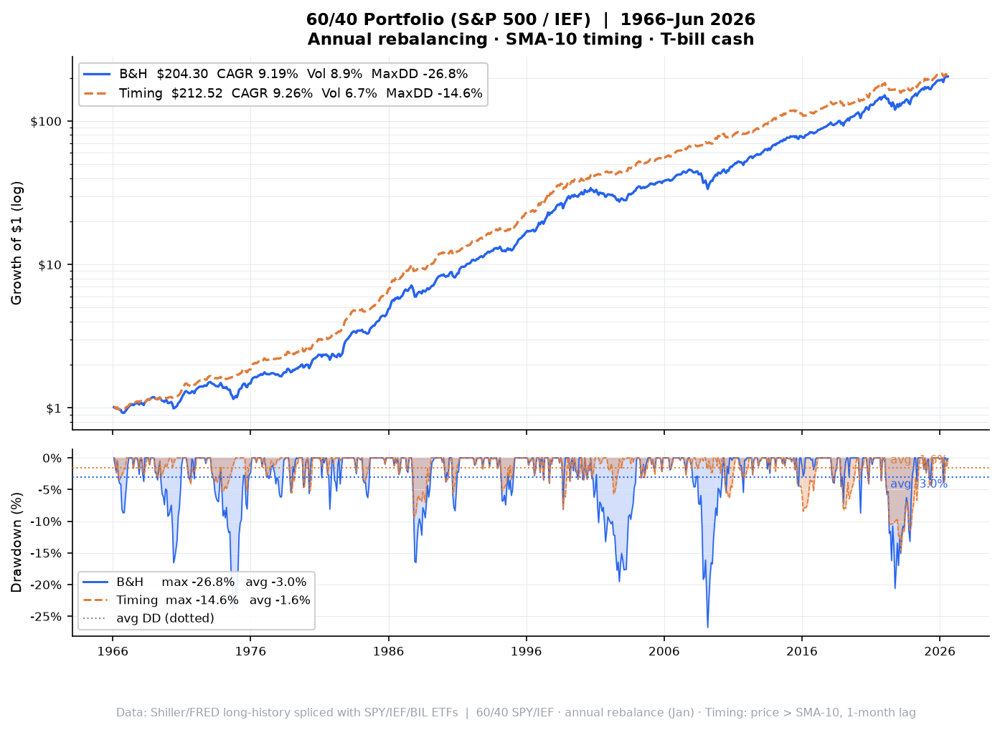
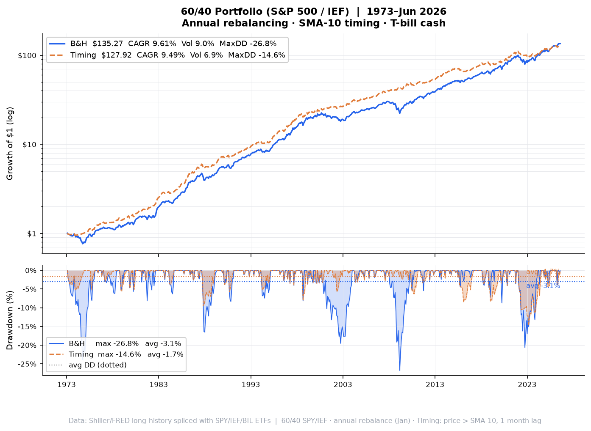
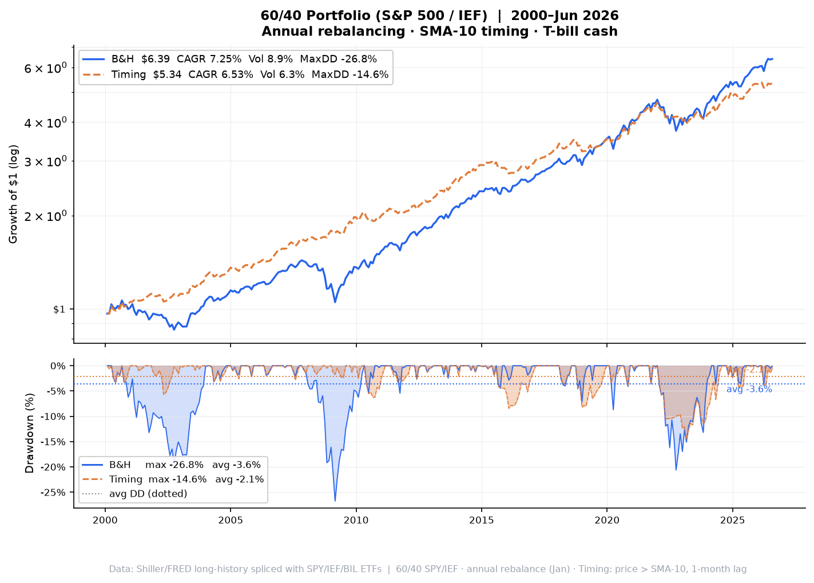

60/40 S&P 500 / IEF · Annual rebalancing at year-end
| Strategy | CAGR | Volatility | Sharpe | Max DD | Avg DD | Ulcer | $1 → |
|---|---|---|---|---|---|---|---|
| Buy & Hold | +9.19% | 8.87% | 1.038 | -26.76% | -3.05% | 5.65 | $204.30 |
| Timing SMA-10 | +9.26% | 6.68% | 1.362 | -14.60% | -1.61% | 2.93 | $212.52 |
| Strategy | CAGR | Volatility | Sharpe | Max DD | Avg DD | Ulcer | $1 → |
|---|---|---|---|---|---|---|---|
| Buy & Hold | +9.61% | 9.04% | 1.062 | -26.76% | -3.05% | 5.73 | $135.27 |
| Timing SMA-10 | +9.49% | 6.86% | 1.358 | -14.60% | -1.70% | 3.07 | $127.92 |
| Strategy | CAGR | Volatility | Sharpe | Max DD | Avg DD | Ulcer | $1 → |
|---|---|---|---|---|---|---|---|
| Buy & Hold | +7.25% | 8.91% | 0.830 | -26.76% | -3.60% | 6.53 | $6.39 |
| Timing SMA-10 | +6.53% | 6.28% | 1.037 | -14.60% | -2.09% | 3.66 | $5.34 |
$1 invested · log scale (top) · drawdown + avg DD lines (bottom) · B&H $204.30 | Timing $212.52

$1 invested · log scale (top) · drawdown + avg DD lines (bottom) · B&H $135.27 | Timing $127.92

$1 invested · log scale (top) · drawdown + avg DD lines (bottom) · B&H $6.39 | Timing $5.34

Portfolio construction: 60/40 S&P 500 / IEF, rebalanced annually at the start of each January. Between rebalances the weights drift with market returns.
Timing rule: Each leg is timed independently. At each month-end compare that asset's price to its 10-month SMA. Price > SMA → invested. Price ≤ SMA → exit to T-bills. Signal at close of t−1, applied to return of month t (1-month lag).
Rebalancing interaction: Annual rebalance resets the notional allocation between legs; the timing signal within each leg is unaffected.
Bond return model: Yield-dependent modified duration + convexity correction on the FRED DGS10 series. Spliced with IEF ETF total-return from 2002.
Cash: FRED TB3MS 3-month T-bill (1934–). Spliced with BIL ETF from 2007.
No transaction costs, taxes or leverage.